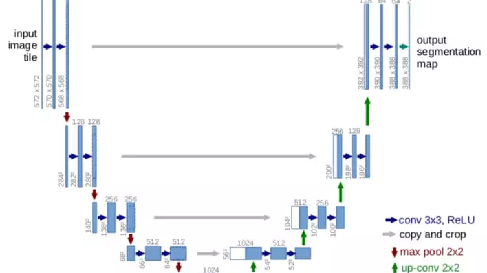

GeoAI Stack: A Guide for 2025
Article under review (click to open)
This article is still being written and is under technical review. Some content may be incomplete or subject to change with short notice.
Second installment of our long journey to become a GeoAI engineer. Last time we generally described what an AI engineer does and what differentiates them.
Now we understand what an aspiring GeoAI engineer needs to get started: the tools, datasets, and necessary setup.
1. Architectural Overview of the Geospatial AI Stack
Let's start with the main objective and keep it in mind.
Objective: Integrate Language (LLM) models and Geospatial Vision pipelines in a reproducible environment, from local development to production.
The typical architecture combines:
- Geospatial data ingestion: access to optical satellite imagery (e.g., Sentinel-2) and SAR radar (e.g., Sentinel-1) via STAC/COG catalogs (Planetary Computer, Earth Data, etc.). We will discuss this in detail later.
- Pre-processing and remote sensing analysis: Python pipelines to read, align, and process large rasters (with rasterio/GDAL, rioxarray/dask for voluminous data) and vectors (with geopandas/shapely). This produces features such as damage maps, flood extent, extracted buildings, etc.
- Vision and geospatial models: application of specialized deep learning models on pre-processed data. For example, IBM used U-Net in one of its research activities for damage segmentation post-natural disaster. Or, models derived from SegFormer for change detection, such as Open-CD.\ Libraries like TorchGeo provide ready-to-use datasets and pre-trained models specific to geospatial scenarios.
 Figure 1 – U-Net architecture with encoder/decoder and skip connection for segmenting damage and classes in satellite images.
 Figure 2 – TorchGeo collects ready-to-use datasets and pre-trained models designed for geospatial computer vision scenarios.
Figure 2 – TorchGeo collects ready-to-use datasets and pre-trained models designed for geospatial computer vision scenarios.
LLM/RAG Integration: a Retrieval-Augmented Generation (RAG) module connects geospatial results with an LLM (e.g., GPT-5 or Mistral Large) to enable Q&A and reporting. The LLM can draw upon updated knowledge bases (documents, place descriptions) in addition to extracted data. This reduces the problem of hallucinations by providing verifiable context. For example, a user can ask "How many buildings were destroyed by the earthquake in Turkey?" and the system uses data extracted from the CV model + textual descriptions to generate an answer citing sources.
Agents and automation: agent-based components (built with frameworks like LangChain, Haystack, or Datapizza-AI) orchestrate the steps and calls to specific tools. \ In particular, an agent can:
- query a geospatial database to find relevant post-disaster images;
- execute the computer vision model to obtain metrics (number of damaged buildings, flooded area, etc.);
- call the LLM to explain the results.
This enables complex "question -> actions -> answer" workflows in a modular way.
Services and deployment: everything is containerized (Docker) and can be exposed via REST APIs (e.g., with FastAPI) or lightweight graphical interfaces. For example, a Streamlit dashboard can display interactive maps with damage layers and offer an LLM chat for disaster-related questions.
Local vs. Production Architecture
When developing the solution, it is good practice to work on test datasets (for example, on a few representative satellite scenes) using notebooks (like Jupyter Lab, Colab, etc.) or modular scripts (in src/).
In production, however, individual components are orchestrated into microservices: there can be a service for geospatial analysis (e.g., calculating risk maps) and a service for the LLM (e.g., generating responses), with logging and monitoring. Raw data in this case, such as images, resides in storage (either a local file system or a cloud bucket), while intermediate results, such as generated COGs (Cloud Optimized GeoTIFFs), shapefiles, vector embeddings, can be cached to speed up repeated requests.
I would like to note that language models are typically used via external APIs (OpenAI, etc.) or, in the case of optimized open-source models (e.g., gemma3n 4B), inference occurs on-premise.
As I read in this paper, this hybrid AI + GIS architecture overcomes the limitations of individual systems: classic GIS systems struggle with natural language input, while "Large Language Models show strong linguistic capabilities but struggle with spatial reasoning and geospatial ground truth". By combining them, we obtain a system where visual models provide "eyes" and structured data, and LLMs provide "linguistic reasoning" on such data, with the ability to consult real-time knowledge bases. In summary, the stack embraces the full cycle: Data (Geo) → AI Vision → Knowledge → LLM. The following figure illustrates the key components and data flow in the system (from data collection to user response):

Figure 3 – Summary diagram of the GeoAI stack connecting geospatial ingestion and analysis, CV models, RAG/LLM components, and agent-orchestrated deployment services.
2. Map of Tools and Resources (2025)
In this chapter, we will look at the main options for each aspect of the stack: from Python environment management to development tools, covering container basics, open geospatial datasets, and key libraries. The goal will not only be to understand all of this but also to keep in mind a comparison of features, outlining the advantages of each method.
2.1 Python Environment Management (venv, conda, poetry, etc.)
One thing we all agree on: for a solid foundation, a reproducible Python environment is necessary, with all dependencies, including GPU packages and geospatial libraries.
The following table compares the most popular approaches today (in 2025):
| Approach | Type | Advantages (pros) | Disadvantages (cons) | Update |
|---|---|---|---|---|
| pip + venv | Installer + isolated env | Simple and native; fast direct installation | Solver no longer greedy but still less powerful than SAT solvers; no native lockfile; requires manual removal of unused sub-deps | pip 25.3 (2025) |
| conda / mamba | Package manager with C++ SAT solver | Manages non-Python libraries (e.g., GDAL, PROJ) in isolated envs; complete and fast resolution thanks to the libmamba solver | Heavy base environment (hundreds MB); lacks out-of-the-box lockfile; sometimes requires mixing pip → possible conflicts | Conda 25.9.1 (2025) |
| Poetry | PyPI manager with lockfile | Uses unified pyproject.toml standard; generates multi-platform lockfile for reproducibility; automatically manages virtual env | Python solver relatively slow on large reqs. (DFS backtracking); voluminous lockfile; beware of excessive constraints (^version) which can cause conflicts in large teams. | Poetry 2.1 (2025) |
| PDM / Hatch | Modern PyPI managers | PDM supports PEP 582 (local environment without activate); Hatch also acts as a complete build system and allows multi-Python version testing | Less common than the pip/conda/poetry triad; Hatch has a steeper learning curve and a packaging focus (not just env) | PDM 2.26 (2025), Hatch 1.15 (2025) |
| uv (Astral) | Unified all-in-one tool (Rust) | Extremely fast (10-100× pip) thanks to its Rust core; replaces pip, pipx, poetry, pyenv with a single tool; universal lockfile support and multi-project workspace; transparent integration with existing venvs (you can activate uv, then use normal pip if you want) | API and CLI still unstable (young project); emerging community | uv 0.9.9 (2025) |
| pixi (prefix.dev) | Conda-like package manager (Rust) | Speed |
New ecosystem (releases <1 year); fewer pre-compiled packages compared to conda-forge; some commands are still evolving | pixi 0.59 (2025) |
| pyenv | Python Version Manager | Allows easy installation and switching of different Python versions per project (useful for multi-version or legacy testing) | Does not manage packages; used in combination with venv/poetry; if used globally, can create confusion about active versions | pyenv 2.6.12 (2025) |
Table notes: mamba is the C++ implementation of conda. Today conda itself incorporates libmamba by default, so the two converge in speed. In data science environments, conda/mamba remains popular for its ease with complex scientific packages, while in production, pip/poetry is often preferred to avoid extra dependencies and have more control. Emerging tools like uv and pixi aim to unify the best of both worlds (speed and completeness). For example, uv is developed in Rust by the creators of Ruff and aims to become the "Cargo for Python" (a single tool to manage Python versions, dependencies, virtualenvs, publishing). Pixi, created by the mamba team, is a drop-in conda replacement written in Rust: it uses uv to resolve pip packages, generates lockfiles, and removes the need for a conda base environment, drastically improving speed and ergonomics for bringing conda environments to production.
GPU/Geo Reproducibility
For a local AI/RS project on GPU, conda often offers the simplest path (e.g., conda install pytorch cudatoolkit gdal rasterio in an env) because it manages compatible "binaries" (CUDA, GDAL). Alternatively, in containerized environments, you can opt for pip + Docker using base images with appropriate drivers (we'll discuss this shortly).
In all cases, it is recommended to pin versions in a lockfile (for example, using poetry.lock) or requirements files with hashes, and to document the setup (e.g., by providing a conda environment.yml + pip requirements.txt for safety).
An ideal project layout includes a structure similar to:
proj-root/
├── src/ # application code (main package)
├── notebooks/ # exploratory Jupyter notebooks
├── data/ # raw or sample data (gitignored if large)
├── models/ # saved models or weights
├── tests/ # unit/integrated tests
├── configs/ # config for Hydra/pydantic (e.g., dev.yaml, prod.yaml)
├── Dockerfile # container definition
├── pyproject.toml # package/dep specifications (poetry/pdm)
├── requirements.txt # dependencies (if pip)
├── Makefile # useful commands (setup, run, lint, test, deploy)
└── README.md # project documentationThis organization partly follows the Cookiecutter Data Science model (to clearly separate code, data, docs) and facilitates the transition from local development to production: the code is packaged (in src/ with an optional _init_.py), tests ensure functionality, and separate configs/secrets per environment allow for consistent deployments.
Let's say it's a good practice, it costs nothing and provides an order that is useful both to you and to those who work with you.
2.2 Essential AI Engineer Tooling
To ensure code quality and development speed, every developer adopts a set of lightweight DevOps/MLOps tools, which we will look at shortly.
Before giving advice on this, I'll provide some definitions that might be obvious to some but not to others.
Linting is an automatic check of source code looking for:
- potential errors: unused variables, suspicious syntax, common bugs
- style issues: formatting, inconsistent names, unrespected conventions. "code smell": patterns that are not errors, but can create problems later In practice, files are analyzed without being executed, and points to be fixed are flagged, often with suggestions or automatic corrections.
- Linting & Format: Black for automatic code formatting (opinionated, PEP8) and Ruff for ultra-fast linting in Rust. Ruff includes hundreds of rules (replaces flake8, isort, etc.) and automatically fixes many issues. It has practically supplanted traditional linters in a short time thanks to its speed and coverage.
Tip: configure Black and Ruff not to overlap rules (e.g., disable in Ruff the rules that Black already handles, such as line length) - this can be done by centralizing the configuration in pyproject.toml.
- Type Checking: use static typing to prevent bugs. Mypy is the standard for type-checking in Python; alternatively, Pyright (integrated into VSCode/Pylance) offers very fast incremental analysis while writing. Setting a "strict" level (e.g.,
warn_unused_configs,disallow_untyped_defsin mypy) helps maintain robust code. - Testing: Pytest is the de facto standard for unit and functional tests in Python. Organize tests in tests/ and perhaps use useful plugins: e.g., pytest-snapshot (or Syrupy) for snapshot testing of complex outputs (automatically compares current output with a previously saved one). This can be useful for validating, for example, API response JSON or raster analysis results. For geospatial pipelines, it might be useful to generate small synthetic datasets to test functions (e.g., create a 100x100 raster and a known geometry and verify that the overlay produces expected results).
- Pre-commit hooks: configure pre-commit (file
.pre-commit-config.yaml) to automatically run quality tools before each commit. A recommended set of hooks: black, ruff, mypy, isort (if not using ruff for import sorting), end-of-file-fixer and trailing-whitespace (simple cleanups), optionally nbstripout or nbqa to normalize notebooks. This ensures that every commit adheres to code style standards and passes static tests. For example, a combined ruff/black hook makes the code consistent - a developer notes "Ruff + Black + isort configured together provide friction-free quality" in CI and editor. - Minimum CI/CD: set up a simple GitHub Action that on every push executes: lint (ruff/black), type-check (mypy), and test (pytest) across a matrix of environments (at least Python 3.x). This automates quality control. For ML projects, a test on sample data can be included (e.g., run inference on a small image) to ensure pipelines and models function. A minimal YAML workflow would include steps to install dependencies (using poetry/mamba for speed in CI) and then
pre-commit run --all-filesfollowed bypytest. - Notebooks and Collaboration: use JupyterLab 4 (modern, supports plugins and real-time collaboration) or the VSCode notebook interface for prototyping. In shared or cloud contexts: Deepnote, Google Colab, or JupyterHub offer ready-to-use environments (Colab, for example, provides limited free GPUs). It's good practice to keep notebooks and code synchronized: Jupytext (notebooks as paired scripts) can be used for easy versioning. To visualize geospatial data in notebooks, tools like folium (interactive Leaflet maps) or ipyleaflet/leafmap allow direct visualization of tiles, shapefiles, and model results (this will be explored in a couple of sections).
Tip: configure all these tools from the start. For example, add to pyproject.toml: black, ruff, isort, mypy with consistent config (same line-length, etc.). Install pre-commit and activate it (
pre-commit install) so that every git commit triggers the checks. These automations make development "no drama": the developer can focus on AI/Geo logic, while the tools keep the code clean and functional.
Does all this make sense today with AI?
In recent years, the introduction of AI into development tools has revolutionized how we write, maintain, and version code. Yet, this revolution has not eliminated the need for good practices: it has simply shifted the focus of what truly matters. AI accelerates, suggests, generates, but does not guarantee quality and structural consistency. For this reason, many classic tools not only remain relevant but, in some cases, become more important than before.
Let's start with linting and formatting. It's no longer a matter of aesthetics, but of having more substance.
Formatters like Black remain indispensable. Even if AI produces already readable code, a consistent format is essential for clean diffs and friction-free reviews.
As for linters, tools like Ruff become fundamental not for aesthetic purposes (which AI already handles well), but for catching errors, unused imports, dead code, or risky patterns. The goal is not to make the code "prettier," but to prevent bugs introduced by overly optimistic generations.
Let's move on to the guardrails introduced by type checking.
With AI proposing complex code or plausible but not always correct functions, tools like Mypy or Pyright become essential as a safety net. Static typing is not just a quality measure, but a structural guide that AI itself uses to generate more precise solutions. Particularly, in a project's core modules, a semi-strict type checking profile enormously reduces the risk of silent errors (meaning errors that are not visible now but emerge later).
Now let's analyze what I believe is the most important point: testing.
With well-structured tests and snapshot tests for complex outputs, it's possible to ensure that AI-driven optimizations or refactors do not alter, shall we say, delicate behaviors.
We're almost at the end; now it's time for pre-commit, what I define as the sentinel between us and Git.
Pre-commit hooks continue to be useful as a final filter before code enters Git (here, by Git, I mean both GitHub and GitLab).
Black, Ruff, and some light cleanups like whitespace removal are often sufficient. Other heavier tools, like Mypy, can remain in CI to avoid local slowdowns. In personal projects, they can even be omitted, but in teams, it remains a mechanism that prevents small, unnecessary errors.
Finally, for independence and reproducibility, there's the classic CI/CD.
With AI facilitating the generation of entire code blocks, the probability of unintentionally destructive changes increases. A minimal CI pipeline, including linting, type checking, and tests, ensures that every push is valid in a clean and controlled environment.
This is a fundamental step to prevent AI-generated code from breaking distant functions or introducing regressions that are difficult to identify.
In conclusion, in a world where AI supports development, "code safety" tools do not disappear: they reposition themselves. Black standardizes, Ruff protects, Mypy or Pyright guide, Pytest ensures stability, CI guarantees reproducibility.
Therefore, AI does not eliminate the need for these practices. On the contrary, it makes them even more relevant because it increases the volume and speed of code produced.
Quality is no longer just a matter of writing, but of the ecosystem. And in this ecosystem, AI is a powerful accelerator, but not a substitute!
2.3 Docker and AI+GEO Containerization
This is a part that is very dear to me (so much so that I want to dedicate an entire series to Docker).
Containerizing the app allows for standardizing the development environment (especially for native libraries and GPU drivers) and thus facilitating the deployment phase. We present two examples of optimized Dockerfiles, one for a lightweight LLM/RAG service, the other for a heavy geospatial pipeline, and a table of recommended base images.
Example 1: Dockerfile for LLM/RAG + FastAPI service (CPU)
# We use the lightweight Python version with Debian 12 "bookworm"
FROM python:3.12-slim-bookworm as base
# Update and install only git, without recommended packages, then clean the cache
RUN apt-get update \
&& apt-get install -y --no-install-recommends git \
&& rm -rf /var/lib/apt/lists/*
# Create a non-root user to run the service
RUN useradd -m appuser
# Set the working directory
WORKDIR /app
# Install a stable version of Poetry and configure package installation
RUN pip install --no-cache-dir poetry==1.8.2
# Copy project files and leverage Docker cache to speed up updates
COPY pyproject.toml poetry.lock ./
# Install dependencies (production only) directly into the global site-packages
RUN poetry config virtualenvs.create false \
&& poetry install --no-dev
# Copy application code
COPY src/ ./src/
COPY main.py ./
# Run as non-root user
USER appuser
# Start Uvicorn exposing FastAPI externally
CMD ["uvicorn", "main:app", "--host", "0.0.0.0", "--port", "8000"]
Note: Here we use python:3.12-slim (~50MB) because it's a good compromise between size and functionality, as it avoids issues arising from using Alpine. I decided to propose version 3.12 for maximum compatibility with other libraries.
Dependency installation is done in a separate layer by copying only pyproject/lock (to leverage Docker cache: if only the code changes and not the dependencies, all packages are not reinstalled).
Uvicorn serves the FastAPI app. This container is CPU-only (suitable for LLMs via external API or small models). If we wanted to include a local model (e.g., Transformers), it would be enough to add RUN pip install transformers or include it directly in poetry.
Example 2: Dockerfile for geospatial pipeline (with GDAL, optional GPU)
Let's now look at a more complex example, but also one more suitable for a GeoAI engineer.
For complex geospatial pipelines (raster analysis, photogrammetry, deep learning on satellite imagery), an environment with many native libraries (GDAL, PROJ, Rasterio) and often GPU support is necessary.
# Stage 1 – builder with Miniconda and mamba
FROM continuumio/miniconda3:latest as builder
# The latest version of mamba is 2.3.3. Then we delete temporary files
RUN conda install -n base -c conda-forge mamba==2.3.3 \
&& conda clean -afy
# Copy the environment that lists geospatial packages (Python 3.12, GDAL,
# Rasterio, Geopandas, etc.)
COPY environment.yaml /tmp/environment.yaml
# Update the base environment with the libraries specified in environment.yaml
RUN mamba env update -n base -f /tmp/environment.yaml \
&& conda clean -afy
# Install additional packages with pip (e.g., Raster Vision)
RUN pip install --no-cache-dir rastervision==0.31.2
# Stage 2 – production image with CUDA 13.0.2 support
FROM nvidia/cuda:13.0.2-runtime-ubuntu22.04 AS production
# Copy the conda installation from the builder
COPY --from=builder /opt/conda /opt/conda
# Update the PATH variable to include conda
ENV PATH="/opt/conda/bin:$PATH"
# Set the working directory
WORKDIR /app
# Copy the source code
COPY src/ ./src/
COPY entrypoint.py ./
# Pipeline startup command
CMD ["python", "entrypoint.py"]
For the environment.yaml file, you can use:
name: geoenv
channels:
- conda-forge
dependencies:
- python=3.12
- gdal=3.12 # GDAL 3.12 is available via OSGeo containers
- rasterio
- geopandas
- numpy
- pandas
- pyproj
- pip
- pip:
- rastervision==0.31.2
- torch==2.7.0We have considered an example here taken from a source from which, at the time, I also studied. I tried to update it based on the library versions updated to the date of this article.
In this multi-stage Dockerfile, we use the Miniconda image with mamba as a builder to resolve dependencies (in environment.yaml we specify, for example: gdal, rasterio, geopandas, pytorch, etc. with the conda-forge channel). This approach automatically manages native libraries (GEOS, PROJ, etc.) avoiding pip errors (e.g., pip install gdal would fail without GDAL dev installed).
In the second part, we start from a very slim nvidia CUDA runtime, which includes only the necessary drivers for PyTorch Tensor GPU.
We copy the conda installation from the builder, avoiding bringing along the compilation layers. The result is a ready image with GPU support and geospatial libs.
Below is a table of common base images for various scenarios:
| Base Image | Content | Recommended Use |
|---|---|---|
| python:3.12-slim | Debian slim + Python 3.x | Lightweight Python services (APIs, agents) - minimal (<50MB) |
| continuumio/miniconda3 | Miniconda + conda (base env) | Data science/Full Geo; easy to install complex packages (e.g., GDAL) |
| mambaorg/micromamba | Micromamba in Alpine/CentOS | Build images with conda env in a lean way; ideal in multi-stage (downloads only required packages) |
| nvidia/cuda:13.0.2-runtime-ubuntu22.04 | CUDA libraries + base runtime | Add GPU support. To be used with pip/conda to install PyTorch/TF with compatible CUDA. Note that we are at version 13.0.2 now |
| pytorch/pytorch:2.7.0-cuda12.8-cudnn8-devel-ubuntu20.04 | Python + PyTorch 2.0 + pre-installed CUDA | DL training/inference on GPU - avoids manual CUDA/cuDNN configurations. However, it also includes various libs (image ~>10GB). |
| ghcr.io/osgeo/gdal:ubuntu-full-3.12.0 | Ubuntu + pre-compiled GDAL (full drivers) | Intensive GIS/RS pipelines. |
| jupyter/scipy-notebook | Python with Jupyter Notebook + SciPy stack | Ready-to-use notebook environments (CPU). Includes numpy, pandas, matplotlib, etc. Useful for interactive development, also on cloud (e.g., JupyterHub Docker Stacks). |
I don't exclude that there are
GPU Management
In on-prem deployments, enable GPU runtime with --gpus all on Docker run (using NVIDIA runtimes). In Kubernetes, use NVIDIA device plugins. If the host does not have a GPU, it will be sufficient for the image to still contain the correct libraries, and we can execute on CPU without errors, or delegate to Colab for GPU execution.
2.4 Managing "passwords" and configurations
Today, the word AI often calls for the word API, and consequently also credentials (or config) for services (e.g., Mapbox token, OpenAI key, database URL). It is crucial not to embed these values in the source code, but to use configuration systems.
.env Approach (local)
The simplest and most functional approach is certainly to use the classic .env file, which means putting the keys in a .env file excluded from git commands, and then loading it with python-dotenv.
For example, the config.py file could be written as:
from pydantic import BaseSettings
class Settings(BaseSettings):
openai_api_key: str
db_url: str
debug: bool = False
class Config:
env_file = ".env" # reads variables from .env
env_prefix = "MYAPP_" # optional: prefix required in env vars
settings = Settings()This code uses Pydantic BaseSettings. Using this code, at each startup, the application would read the environment variables (or from the .env file) and build a settings object.
This offers the advantage of type validation (e.g., if db_url must be a URL, Pydantic can validate it). Defaults can be defined, and Pydantic automatically converts types (int, bool, etc.) and handles nested configurations. Pydantic is excellent when "the configuration structure is relatively simple and based on env var/.env", i.e., with few main parameters.
Furthermore, by integrating it with FastAPI, settings can be used as dependencies.
YAML/INI file approach + other classes
In larger projects or with many configurations, using YAML or TOML files for different environments can be more organized. For example, a schema:
config/
|_default.yaml
|_dev.yaml
|_prod.yamlLibraries like Dynaconf support multi-layer configuration by loading multiple files and merging them based on an environment key.
Dynaconf allows defining configs in different formats (YAML, TOML, Python) and distinguishes development vs production contexts, in addition to supporting encrypted secrets. It is indicated when "complex, multi-source configurations with clear separation between environments are needed".
Alternatively, Hydra (from Facebook) allows composing configurations from modular files and overriding them via CLI. Hydra is common in research contexts for managing many parameters (e.g., model architecture, hyperparameters) and varying experiments simply by launching. Hydra automatically creates versioned output directories with the used config.
Practical config tips: If the app is relatively simple (few parameters and secrets), Pydantic BaseSettings offers simplicity and robustness (type-safe). If it grows in complexity (e.g., dozens of entries, multiple files), Dynaconf might be useful to avoid boilerplate and manage multiple sources. Hydra is excellent if you plan to do many run variations (typical in ML model training), but for a web service, it might be overkill.
Secret management in production
Never commit credentials. In cloud environments, use dedicated services: AWS Secrets Manager, GCP Secret Manager, Hashicorp Vault.
For example, on AWS, you can store the OPENAI_API_KEY and retrieve it dynamically in the ECS container or insert it as an environment variable through the configuration system (like Terraform).
Many CI/CD services (GitHub Actions, GitLab CI) offer an integrated vault to save secrets and make them available as env vars during deployment. Therefore, the recommended pattern is: locally .env, in CI/prod env var or encrypted config.
In summary, investing time in robust config/secret management ensures that the app can transition from dev to prod without manual code changes, minimizing leak risks (no keys in the repository, please).
2.5 Open Datasets and STAC/COG Catalogs for Disasters
For more on satellite sensors and data types, see the article What Data Do Satellites Record?.
For Disaster Intelligence projects, drawing on updated open datasets is crucial. Fortunately, between 2022-2025, STAC (SpatioTemporal Asset Catalog) catalogs and specialized datasets have increased. Here is a selection of state-of-the-art datasets and resources:
| Dataset / Catalog | Data (type and resolution) | Coverage/Size | Task / Use | Source (link) |
|---|---|---|---|---|
| xBD / xView2 (2019) | Maxar pre- and post-event satellite imagery (RGB, ~0.3 m/px, 1024×1024 tile); building annotations + damage class | 19 events of 5 different types (earthquakes, hurricanes, fires); 850k annotated buildings over ~45k km²; 9k pre/post image pairs for training | Building Damage Assessment - building segmentation and damage classification (none, minor, moderate, major, destroyed) | DIU xView2 - xBD Paper) |
| C2SMS Floods (ended in 2023) | Sentinel-1 (SAR) + Sentinel-2 (Optical) co-registered, 512×512 px; binary masks with water (flood vs permanent water) | ~900 chip pairs from 18 global flood events | Flood segmentation (multimodal): training models to detect floodwater by combining SAR and optical | Microsoft/Cloud to Street |
| Sen1Floods11 (2020) | Sentinel-1 GRD (SAR) chips 512×512 px; binary water mask | 4,831 chips from 11 flood events across 5 continents[59][60] (including Japan Tsunami 2011, Harvey 2017, etc.) | Flood segmentation (SAR) - benchmarking on radar only (robust even with clouds) | Cloud to Street - [IEEE Paper][61] (HuggingFace Datasets available) |
| NASA/UN Flood Extents (2023) | Sentinel-1 rasters (sigma0 backscatter, ~10 m) with vector flood delineation polygons | Recent global events (e.g., Pakistan 2022, cyclones 2023) - data released via UNOSAT or NASA. Size varies (e.g., Pakistan ~1000 rasters) | Rapid flood mapping - water segmentation via automated pipelines (Google, UN) | UNOSAT / NASA (HRC) - e.g., internal datasets shared on Radiant MLHub |
| Maxar Open Data (2017-2025) | High-resolution optical satellite imagery (30-50 cm) pre and post-disaster (GeoTIFF) | >100 global events (Nepal Earthquake 2015, Beirut Explosion 2020, Libya Flood 2023, etc.) - coverage varies per event (tens of images each)[62] | Visual damage mapping - quickly provides post-event CC BY 4.0 imagery for humanitarian uses, e.g., mapping collapsed buildings | Maxar Open Data Program (AWS OpenData)[63] (includes STAC index on registry.opendata.aws) |
| Copernicus EMS (2015-) | Analyst-derived products from imagery (GeoTIFF and shapefile): e.g., polygons of destroyed buildings, flood extent, damage grade maps (EMS-98) | Emergency activations in Europe and worldwide (thousands of maps for earthquakes, floods, fires) - resolution depends on imagery (Sentinel-2 10 m, Pléiades 0.5 m, etc.) | Rapid Mapping - official results from analysts in a few hours/days (useful ground truth for model training or verification) | Copernicus Emergency Mgt Service (public downloads per activation) |
| Landslide4Sense / GDCLD (2024) | Multi-source HR imagery (PlanetScope 3 m, Gaofen-6 2 m, UAV ~0.1 m) with landslide masks (pixel polygons) | 9 global seismic events (Nepal 2015, Amatrice 2016, etc.) with various geological contexts[[64]](https://essd.copernicus.org/articles/16/4817/2024/#::text=globally%20distributed%2C%20event,art%20semantic%20segmentation%20algorithms.%20These); 60,000 labeled landslides. + Test on 1 rain-induced event. | Landslide detection - landslide segmentation in mountainous contexts. Allows training robust models on global datasets. | Globally Distributed Coseismic Landslide Dataset - [DOI Zenodo][[64]](https://essd.copernicus.org/articles/16/4817/2024/#::text=globally%20distributed%2C%20event,art%20semantic%20segmentation%20algorithms.%20These) (Fang et al, ESSD 2024) |
| Planetary Computer STAC (ongoing) | Cloud catalog of 100 environmental/EO datasets: Sentinel-1, Sentinel-2, Landsat, MODIS, NAIP collections, etc., with STAC API and Azure storage for on-demand tiles | Global or national coverage depending on the dataset. Examples: Sentinel-2 L2A global (2017-2025), NAIP USA (aerial 60 cm). | Base data hub - standardized access to open geo imagery and data for custom analytics (subset, mosaic, etc.). Allows spatial and temporal queries via API.[[65]](https://github.com/microsoft/PlanetaryComputerExamples#::text=quickstarts%2C%20dataset%20examples%2C%20and%20tutorials) | Microsoft Planetary Computer - [Docs][66] (free API key required for high throughput) |
| Radiant MLHub (ongoing) | Catalog of geospatial datasets for ML with labels: e.g., LandCoverNet (global land use classification), BigEarthNet, Functional Map of World, etc. + pre-trained models | Various - global (LandCoverNet covers 5 continents), regional (crop type in Rwanda, etc.). Data often in chips/COCO format. | Training data repository - unifies curated datasets used in competitions and papers, ready for use with libraries (torchgeo, tf.data). | Radiant Earth - [Registry on AWS][67][68] (free API key available) |
| NOAA NGS Aerial (various) | Post-event nadir oblique aerial imagery (10-20 cm/px) | USA (coasts and areas affected by hurricanes, tornadoes, fires). Example: ~15k aerial photos after Hurricane Ian 2022 Florida[[69]](https://storms.ngs.noaa.gov/storms/ian/index.html#::text=Hurricane%20IAN%20Imagery%20Hurricane%20IAN,by%20the%20NOAA%20Remote). | Damage inspection - used for visual damage assessment immediately after events (also input for CV - e.g., damaged roof detection). | NOAA NGS Emergency Response Imagery[69] (viewer storms.ngs.noaa.gov, data downloadable via API) |
| Planet Disaster Data (2020-) | PlanetScope (3-5 m) and SkySat (0.8 m) imagery with temporary free license for major disasters | Global, selective. Examples: Australia Fires 2020, Beirut 2020, etc. Often full event area coverage for subsequent days/weeks. | Rapid Monitoring - high-frequency (daily) optical imagery for monitoring disaster evolution. Useful for before/after time series not available elsewhere. | Planet/Open Region - (requires registration, data provided upon request or via partners)[[70]](https://esri-disasterresponse.hub.arcgis.com/pages/imagery#::text=disasterresponse,major%20earthquakes%2C%20floods%2C%20storms) |
These datasets allow for training and validating models for damage assessment, flood mapping, change detection, etc., leveraging real data from past events. We note the trend towards multi-modal datasets (SAR+optical combined), multi-event (generalization), and with rich labeling (not just binary, but degrees of damage, land cover type, etc.). For example, xBD remains the reference for damage detection with its unprecedented breadth[54][55], while Cloud to Street's flood datasets combine Sentinel-1 and 2 to mitigate cloud cover issues[57].
Active STAC Catalogs: The aforementioned Planetary Computer and Radiant MLHub offer uniform APIs for searching data by area and date. For example, with pystac-client we can query Planetary Computer:
from pystac_client import Client
catalog = Client.open("https://planetarycomputer.microsoft.com/api/stac/v1")
search = catalog.search(collections=["sentinel-2-l2a"],
intersects={"type": "Point", "coordinates": [30.5,50.5]},
datetime="2023-06-01/2023-06-30")
items = list(search.get_items())
print(f"Found {len(items)} Sentinel-2 images in June 2023 in the AOI.")
for item in items[:5]:
print(item.id, item.assets["B04"].href) # prints link to band 4 (red)(Example of using pystac-client to search for Sentinel-2 images in an AOI and data period. It allows us to obtain URLs (often signed) to directly access the COG file, or download subsets.)
Similarly, Radiant MLHub provides SDKs and APIs for downloading ML datasets. For example, with the radiant_mlhub package, we can query collections by name and download annotations.
Other Notable Datasets 2025: SpaceNet Challenges (1-8) have produced open datasets on building footprints, road network extraction, multi-year building change detection (SpaceNet 7), etc. Although somewhat dated, they remain valuable for benchmarks. For example, SpaceNet8 (2022) provides pre/post-flood PlanetScope imagery + flood masks and building footprints, useful for multimodal approaches (similar to xBD but for floods). Furthermore, datasets like CASA Landslide and DMLD (China) offer thousands of examples of landslides mapped in different regions[71][72]. The open community is also moving towards geospatial foundation models: e.g., BigEarthNet (520k Sentinel-2 patches labeled with land cover) is used to pre-train ResNet/ViT-like models on satellite data.
2.6 Geospatial and Core RS Libraries
The geospatial Python ecosystem is mature. Key tools:
GDAL (osgeo) - the foundation library for GIS rasters and vectors. In Python, it is used indirectly via bindings (osgeo.gdal) but more often through more Pythonic wrappers:
rasterio (for rasters) and fiona (for shapefiles) are Pythonic wrappers of GDAL/OGR. Rasterio offers GeoTIFF reading/writing, cropping, reprojection, and numpy-friendly functions.
Geopandas (for vectors) combines Fiona + Shapely: it allows reading shapefiles/GeoJSON into DataFrames and using geographic operations (buffer, intersection) via Shapely in a vectorized manner. Excellent for non-enormous vector layers (up to ~100k entities).
Shapely 2.0 - geometric library (in C) used by geopandas; with v2, it natively supports arrays (thanks to PyGEOS), making it very efficient on large sets of geometries.
pyproj - manages coordinate systems and transformations (uses PROJ underneath).
rasterio vs rioxarray vs xarray: rasterio is ideal for high-performance file-by-file raster operations and batch processing (scripts); xarray is preferable for analysis on data stacks like temporal cubes or large mosaics, thanks to dask for parallelization. rioxarray is an extension of xarray that adds geospatial awareness (CRS, transforms) using rasterio under the hood. Ruff - "Rasterio is for speed, batch processing of many files, Rioxarray shines for interactive analytical work in notebooks" users note[73]. However, be careful: rioxarray/xarray can consume a lot of memory if not well chunked, and on large datasets they sometimes crash, whereas rasterio still performs at lower speeds ("when large datasets slow down or crash with rioxarray, I switch to GDAL/rasterio which solves it in a few seconds" quote)[74][75]. Tip: use xarray + dask for distributed processing (e.g., calculating NDVI on 1000 scenes) - dask will create a graph and execute in parallel (even on a cluster).
rio-tiler: library for working with COG (Cloud Optimized GeoTIFF) and generating tiles (e.g., 256x256) for web visualization. It allows quickly extracting image portions via HTTP range requests and creating XYZ or WMTS tiles. Indispensable if building a map service (e.g., providing an interactive map of model predictions). Example: with rio-tiler you can get the PNG tile for zoom 15, x=17342,y=11945 from a COG in S3 with a single call, possibly including color mapping application.
folium / ipyleaflet / leafmap: for visualizing results on interactive maps in Jupyter. Folium is simple: it produces a Leaflet HTML map with markers, raster/vector layers (you can even add the URL of a tile server or a COG). ipyleaflet is more advanced (bidirectional, reacts to Python in real-time) - e.g., it allows drawing a polygon on the map and having it in Python for analysis. Leafmap provides a high-level API and also supports interfaces like Google Earth Engine. Integrating these libraries helps to visually validate model outputs (e.g., showing damaged buildings in red on a map).
TorchGeo: deserves mention again here - it is an official PyTorch Domain Library[76] which provides dataset loaders for many geospatial datasets (like those above), samplers for extracting geolocated patches by balancing classes, and pre-trained models (e.g., a ResNet50 pre-trained on BigEarthNet). It simplifies the creation of training pipelines with PyTorch Lightning for tasks such as building segmentation, land use classification, etc., reducing the custom code to write. For example, TorchGeo includes the datamodule for xView2, so you can easily get pre/post pairs and damage masks with a simple API[77][78].
Others: scikit-image for raster filters (e.g., median filter to remove SAR speckle), OpenCV if fast transformations are needed, pySAR (or Gamma) for SAR processing (e.g., generating interferograms - specialist field). SNAP (from ESA) has Java APIs that can be called in Python (not trivial, but useful for Sentinel-1 pre-processing).
Geospatial databases: if vector data becomes large, consider PostGIS (PostgreSQL + GIS extension) to store and query efficiently. For example, building detection results for a city (millions of points) can be put into PostGIS and queried with spatial indexes (e.g., find damaged buildings within a 1 km radius of X coordinates). Or, in geospatial retrieval for LLM agents (see Spatial RAG), a spatial database can quickly filter candidates (as suggested by Yu et al. 2024[79][80]). With Python, you interact via SQLAlchemy/GeoAlchemy or directly with geopandas (which can read from PostGIS with read_postgis).
When to use what:
- If you only need to read a few images, perform pixel-wise calculations or masks => rasterio + numpy is simple and sufficient.
- If you need to manage a large data stack (time series, data cube over a large area) => xarray + dask is more appropriate (but requires thinking about chunking and memory).
- For streaming pipelines (many independent images) => leverage concurrent.futures or dask.bag with rasterio (which releases the GIL during I/O operations).
- For vectors, if <100k features => geopandas is fine; >100k consider PostGIS or use spatialindex/Rtree for in-memory spatial queries.
- For serving tile maps => rio-tiler for the backend (cuts images) and folium/ipyleaflet for frontend map.
- For mixed raster-vector analysis (zonal stats, clip raster with mask) => rasterstats is a useful package (built on rasterio).
- If you are working with 3D or LiDAR data => PDAL (Point Data Abstraction Lib) with Python bindings or pylas for LAS.
Example Pipeline (Optical + SAR): let's assume we want to identify flooded areas by combining Sentinel-1 and Sentinel-2:
- Data loading: we download a post-event Sentinel-2 image (e.g., infrared and red band) and a coeval Sentinel-1 image. We can use pystac-client to get the asset URLs and download them. We load with rasterio:
s2 = rasterio.open('sentinel2.tif'),s1 = rasterio.open('sentinel1.tif'). - Pre-process: we align resolution and CRS - e.g., we bring Sentinel-1 (10 m, VV polarization) into the Sentinel-2 grid (10 m). With rasterio:
rasterio.warp.reproject(source=s1.read(1), src_transform=s1.transform, src_crs=s1.crs, destination=arr, dst_transform=s2.transform, dst_crs=s2.crs, dst_shape=s2.shape). We obtain the registered SAR array. - Stack & filter: we normalize the bands (e.g., Sentinel-1 in dB, applying a threshold to remove noise) and stack them: we build a 3-channel array: NIR, Red, SAR. We can do this with numpy on small images, or with xarray (a multi-band DataArray). We might apply a median filter on the SAR to reduce speckle.
- Model inference: we pass the tensor
[H,W,3]to the segmentation model (e.g., U-Net trained on a flood dataset). We obtain a predicted binary mask. - Post-process & vectorize: using rasterio.features, we transform the mask into a shapefile (flooded polygons).
shapes = rasterio.features.shapes(mask_pred, transform=s2.transform)provides geometries; we filter those with minimum area and write them with geopandas into a GeoJSON. - Visualize/validate: we open the map with folium:
folium.Map(...). Add Sentinel-2 RGB layer, then add semi-transparent flood polygons in blue.
This pipeline combines rasterio for I/O and warp, numpy/scikit-image for filters, deep learning (PyTorch) for inference, rasterio.features/geopandas for vector output. If the scale grows (very large or many images), we can distribute on dask: e.g., read images as dask arrays via rioxarray (rioxarray.open_rasterio(..., chunks=...)), perform lazy calculations, use map_blocks for model inference (if the model is deployed in a way that dask can call it - not trivial, but possible with dask.delayed). Or process iteratively by tile (e.g., 512x512).
Integration with LLMs: the final geospatial results (e.g., shapefiles of flooded areas with attributes) can be inserted into a textual knowledge base: for example, generate a brief summary in JSON or CSV (50 km² flooded in region X). An LLM agent can then perform simple geospatial queries via Python code (e.g., using shapely to check if a point is within a flooded area) - as seen in recent research Spatial-QA approaches.
In short, Python geospatial libraries offer power similar to desktop GIS but programmable: from simple buffers to complex spatial joins or mass reprojections. The key is to choose the right tool based on scalability and complexity: a mix of rasterio/geopandas for targeted tasks, xarray/dask for big data, dedicated databases/services if necessary. Fortunately, mutual compatibility is good (geopandas can use shapely/dask-geopandas for parallelism, rasterio interacts with numpy/xarray easily). All integrated with the PyData world (numpy, pandas) and now PyTorch/TensorFlow for ML models creates a powerful ecosystem for geospatial AI.
2.7 Project Templates, Reference Repos, and Best Practices
To build a production-ready stack, it's useful to study existing open-source projects that address similar problems. Here are 10 reference repositories and templates (2025) from which to draw lessons, with motivation:
LangChain - 【67†repo】 (framework for agents and LLM apps). Why: It's the de facto standard for orchestrating LLMs with memory, tools, and data augmentation. Study how it structures modular code (chains, agents), its pyproject.toml with uv (they maintain it with uv and release frequently,
14k commits), and how they manage integrations (e.g., vectorstores). Update: v1.0 released 2025, very active repo (commits daily)[[81]](https://github.com/hwchase17/langchain/commits#::text=Commits%20%C2%B7%20langchain,%C2%B7%20fix%28infra%29%3A).LlamaIndex (GPT Index) - [82] (data-centric RAG framework). Why: It provides patterns for indexing documents and images and performing efficient retrieval for LLMs. It has components for spatial queries (e.g., you could index coordinates and perform filtering). See how it implements various Storage and readers for heterogeneous data. Active Python repo (0.14.x releases in 2025).
Haystack (deepset.ai) - GitHub. Why: End-to-end open-source QA pipeline, with support for document retrieval, generation, and even agents. They have a design oriented towards producing APIs (e.g., GraphQL) and composable YAML pipelines. Study how they define components (Reader, Retriever, Generator) and configuration management. Very production-friendly (used in companies). Regularly updated (v1.x in 2025).
TorchGeo - 【49†repo】 (PyTorch GeoAI library). Why: Example of a well-designed domain-specific library: see structure (modularity in datasets, samplers, models), thorough tests, and use of CI (they have integration with OSGeo, etc.). Actively maintained by Microsoft Research (recent commits 2025). Useful for understanding best practices in packaging geospatial models (e.g., in HuggingFace Hub).
Segment Anything (Meta AI) - GitHub. Why: Although not geospatial, SAM has also had an impact in RS (used to segment generic objects in satellite images). The repo shows how to deploy a foundation model with interactive annotations. Study the optimized inference pipeline part (batched mask generation on large images) and the design of the demo notebook/web. Last update: 2023-11 (Meta released SAM-1).
xView2 First Place Solution - [83] (DIUx-xView GitHub). Why: Code from a winning team for building damage. It allows seeing a complete project: data preprocessing from xBD, model (U-Net ensemble), inference and post-processing, and final packaging (they have scripts for inference on image directories). Although from 2019, many principles remain valid. PyTorch structure with JSON config, separate training and inference. Useful for understanding tricks to improve performance (e.g., split model into two stages for localization vs classification[84]).
SpaceNet 8 Baseline (Flood Detection) - [85] (spacenet8 repo). Why: An example of a multimodal pipeline: reads Sentinel-2 and -1, uses models to extract roads, buildings, and floods. It contains notebooks and scripts, and shows how to evaluate results with custom metrics. It teaches how to organize a challenge project and apply specific augmentations. Last update 2023.
Raster Vision - [86] (Azavea). Why: General framework for CV on geospatial images, written with a plugin architecture. Allows defining training pipelines with JSON configs. Study its config-driven design, the use of Docker to isolate environments, and its components (scenario, dataset, backend). Demonstrates how a tool can abstract common tasks (clip, retiling, train, predict) for various problems. Updated to the latest version 0.31 in 2025[86].
Lightning + Hydra Template - Lightning-Hydra-Template (ashleve) - GitHub. Why: A very popular scaffolding repository for deep learning projects. Combines PyTorch Lightning for modular training and Hydra for managing experiment configs. Offers a clean structure (src with pl_modules, data_module, separate configs for dataset/model/training). Although general, it's useful for seeing best practices in ML code organization, logging (integrated neptune/mlflow), and train/val automation. Continuously updated with new best practices (v2024).
Cookiecutter MLOps - (DrivenData Cookiecutter Data Science 2.0) - GitHub. Why: A project template that emphasizes the complete cycle: data, modeling, deployment. Although more data-science oriented, it provides a reference on how to structure repositories with folders for raw data, intermediate data, saved models, reports, etc., and how to document decisions. Useful for not forgetting anything (e.g., it also includes CI setup and docs scaffolding).
In addition to these, monitor tech company repositories on disaster response - e.g.: Google's flood forecasting (proprietary code, but detailed publications), UNOSAT open products (GIS scripts). And communities like OSGeo and OMEN (Open Mapping) for automatic mapping tools.
Ideal Repository Structure (AI+Geo): combining inspiration from the above, we recommend:
- Modularize by components: e.g., src/models/ for ML models, src/data/ for loading utilities, src/utils/geo.py for geospatial functions (buffer, reproject, etc.), src/api/ for FastAPI code.
- Configs outside code: use Hydra or Pydantic as discussed. Provide example configs for datasets (especially if open) so that new contributors can easily replicate results by pointing to the correct paths.
- Makefile/CLI: provide quick commands: make data (downloads open dataset), make train (starts training if applicable), make infer (performs inference on example input), make serve (launches API). This reduces friction in executing parts of the project.
- Comprehensive README: explain architecture, how to set up the environment, run tests, etc. See LangChain's README[6] or TorchGeo for examples of clear documentation and build badges.
- Tests & CI: include some tests even for geospatial functions (e.g., a test that creates a geometry, applies a buffer, and compares the expected area). Or tests that the loaded model produces output with correct dimensions on a dummy input.
Finally, general best practices: version models (use semver or date to know with which data they were trained), keep track of cron jobs if any (e.g., daily data update), and include monitoring tools if in production (Prometheus exporter for resources and perhaps a counter for how many times a certain inference function is called).
2.8 Practical Plan: Complete Setup in 7-10 Days
We now propose a day-by-day roadmap (approximately 2-3 hours per day for a week) to build the local stack and move it towards minimal production.
Day 1: Environment and Initial Structure
Objective: Set up the Python environment and the basic project structure.
- Activity: Install pyenv and create a new Python 3.11 version if necessary. Initialize a git repository (git init). Choose the environment manager (e.g., Poetry vs Conda): to start, you can use Poetry for simplicity. Run poetry init and immediately add main dependencies: poetry add rasterio geopandas shapely torch torchvision fastapi uvicorn.
- Commands: pyenv install 3.11.5 && pyenv local 3.11.5 (or use the system/conda interpreter), poetry init, poetry add .... Create the folder structure as in §2.1 (you can use cookiecutter data science as a reference).
- Result: Project with directory layout, active Python env with core packages installed. Verify crucial imports (open REPL: import rasterio, torch, geopandas to confirm they work - if geopandas complains about gdal, you might need apt-get install libgdal-dev or install via conda instead). In case of dependency issues (e.g., GDAL), adjust using conda: e.g., create env with mamba create -n myenv python=3.11 gdal rasterio geopandas.
Day 2: Tooling and Code Quality
Objective: Configure pre-commit, lint, formatter, test scaffolding.
- Activity: Add Black, Ruff, Mypy to the project (poetry add --dev black ruff mypy pre-commit pytest). Create .pre-commit-config.yaml with hooks:
repos:
- repo: https://github.com/astral-sh/ruff-pre-commit
rev: v0.5.4
hooks:
- id: ruff
args: ["--fix"] # let ruff apply simple fixes
- repo: https://github.com/psf/black
rev: 23.9.1
hooks:
- id: black
- repo: https://github.com/pre-commit/mirrors-mypy
rev: v1.5.1
hooks:
- id: mypy
- repo: local
hooks:
- id: pytest
name: pytest
entry: pytest
language: system
files: "^tests/"
Install the pre-commit hooks (pre-commit install). Create configuration files in pyproject.toml for black/ruff (line-length, etc. as in Medium combos[41]). Create a test stub in tests/test_basic.py with a trivial assertion (e.g., assert 2+2==4).
- Commands: pre-commit run --all-files to test the hooks immediately. pytest to see that the suite (with 1 trivial test) passes.
- Result: Every commit will now automatically format the code and flag issues. The test base is set up (even if trivial). The introduction of lint or type-check errors will be blocked by the hook, ensuring standards from the first code written.
Day 3: Example Data Ingestion
Objective: Download a small example dataset (e.g., 1 event) and implement reading scripts.
- Activity: Choose a target dataset - e.g., images and labels of Hurricane Harvey 2017 (flood). Use the planetary STAC API or directly known links (Maxar Open Data, etc.) to download 1-2 pre and post images and some vector labels. Write a Python script in src/data/download_data.py that downloads these files (you can use requests or pystac-client + urllib). Implement a function to load a pair of rasters into memory (use rasterio).
- Commands: Example: poetry add requests pystac-client. Run the script: python src/data/download_data.py --event harvey (parameterize based on the event). This should save files in data/raw/harvey/.
- Result: You have a subset of local data. Verify by opening with rasterio that the files are readable and check dimensions. This prepares the ground for developing pipelines without downloading every time (add data to .gitignore). - Extra: You could write a test for the load function (e.g., assert img.shape == (….) expected). Or generate a synthetic image for testing (useful for CI: you won't want to download 100MB of data in CI, but you can create a 10x10 GeoTIFF in memory and pass it to functions to test the flow).
Day 4: Model and Geospatial Pipeline
Objective: Implement the optical+SAR -> prediction -> vectorization pipeline on a test case.
- Activity: If you have a pre-trained model (e.g., you could use placeholders like: if SAR pixel > X and NDVI < Y => flood), implement it now in src/models/model.py as the predict_flood(mask, arr_s2, arr_s1) function. Otherwise, if you have time/data, you can train a small model: install Lightning (poetry add lightning) and write a segmentation LightningModule. But given the time constraints, let's assume we use a simple heuristic or a loaded pre-trained model (e.g., use torchvision segmentation weights and adapt them).
- Commands: Run the complete pipeline on a test tile: read the images (Day3), pass them to the model, get the mask. Use geopandas to convert to vector and save the shapefile in data/predictions/. Visualize the result (you can create a small script with folium that loads the image and overlays the shapefile - open it in a browser).
- Result: Functional local pipeline on at least one input. Qualitative validation: if the model is not trained, it's fine to just see that it produces something. This step consolidates the integration between geospatial and ML components. - Extra: Add logs or print results (e.g., % flooded pixels: 12%). You can also calculate a metric if you have ground truth for that image (if there's a manual mask in the dataset, compare it with the predicted one).
Day 5: Service API and LLM Integration
Objective: Create a FastAPI microservice that exposes the functionality and integrates an LLM for Q&A.
- Activity: Write a FastAPI app in src/api/app.py with endpoints: /predict that might accept coordinates or an event ID and returns how many buildings/floods were found; /ask that accepts a user question and uses an LLM chain to answer. For the latter, you need to integrate the LLM: you can use OpenAI API (if you have a key) or a local open model (install pip install openai or transformers + an HF model). Implement simply: receive a question, in the backend call the internal function (which eventually consults geospatial results - if the question is like "how many buildings damaged at X", query geopandas data). Finally, compose the answer - if you have OpenAI, send it with a prompt containing the data as context.
- Commands: Start the local server: uvicorn src.api.app:app --reload and test queries with curl or in the browser (FastAPI doc UI). Example: GET /predict?event=harvey -> returns JSON {"flooded_area_km2": ..., "buildings_damaged": ...}. Then POST /ask with body {"question": "How many buildings were damaged by Hurricane Harvey?"} -> the code takes buildings_damaged from the previous output and formulates "Approximately XYZ buildings were damaged." (In the future, this would be done via an agent).
- Result: A prototype disaster API service. Not yet robust or secure, but it demonstrates the idea. - Extra: Integrate the actual LLM - if OpenAI, add the key to .env and use openai.Completion.create(prompt=...). Or if local, load a small model (e.g.: pip install sentence-transformers and use a Q/A model like "deepset/roberta-base-squad2" with Transformers QA pipeline).
Day 6: Dockerization and Portability
Objective: Create the Docker image of the app and test it (CPU).
- Activity: Write the Dockerfile based on the examples (§2.3). Since the focus is lightweight (no heavy training), you could use Python slim + pip. Pay attention to geospatial dependencies: add apt-get for geos/gdal in the Dockerfile. Example:
FROM python:3.11-slim
RUN apt-get update && apt-get install -y libgdal-dev libgeos-dev
...
RUN pip install -r requirements.txt(Or use a miniconda image and conda install). Copy the app and entrypoint.
- Commands: docker build -t myapp:dev . (from the root) and then docker run --rm -p 8000:8000 myapp:dev. Verify that by making the same requests as Day5, you get responses. If it works in Docker, you've resolved any native dependency gaps. If it fails (e.g., Import GDAL errors), experiment with a different base image (conda).
- Result: Functional local container. This simulates the production environment. Current image size? Perhaps ~1-2 GB with all libs (geopandas and Torch inflate it a bit). Consider optimizing with multi-stage if time permits. - Extra: Test multi-arch: if you only have local CPU, at least you've tested on linux/amd64.
Day 7: Cloud Deployment or Documentation
(Optional, if you wish to proceed further)
Objective: Prepare the ground for deployment and write final documentation.
- Activity: Write user documentation: how to use the API, how to replicate results (perhaps in README). Optionally, create a smoke test script in tests/test_api.py that starts a FastAPI test client and calls /predict on a sample, verifying the response format.
- Consider where to deploy: you could try Heroku (simple for FastAPI, but without GPU) or Railway. Configure the Dockerfile for production (e.g., use gunicorn).
- Set up optional CI/CD: for example, a GitHub Actions workflow that builds the image and publishes it to Docker Hub on push to main.
- Result: Project ready to be shared: code, Docker, documentation, and perhaps a live link (even if performance is limited in the free tier).
Naturally, each phase may require adjustments. For example, you might discover a missing package – resolved by adding it and regenerating poetry.lock or environment.yml (a reason to fix the environment early).
The plan anticipates ~7 days, but could extend to 10 if you dedicate time to custom model training or refining the LLM agent. In that case: Day 8-9 could be dedicated to fine-tuning a model (using open datasets and saving the weights), and Day 10 to integrating that output into the service (e.g., a /retrain endpoint if you want continuous MLOps).
2.9 Immediate Actions (first 24h)
To get started immediately, here's a quick checklist of the first actions to take:
- 1. Prepare the development environment: Install Anaconda/Miniconda or Poetry on your Linux system. Update NVIDIA drivers if you plan to test on a remote GPU (Colab). Create a new, clean Python 3.11 environment.
- 2. Initialize the project: Structure the folders as described and start a git repo. Create a remote repository (GitHub) and make the first commit with README.md and pyproject.toml/requirements.txt.
- 3. Configure Dev tools: Immediately set up pre-commit and Black/Ruff. Run pre-commit install so that every file you create will already be formatted and linted on commit. This prevents you from accumulating technical style debt.
- 4. Retrieve sample datasets: Identify a small event (even just a pre/post image from Maxar Open Data or Copernicus EMS). Download them manually for now (via browser or AWS CLI) and place them in data/raw/. In parallel, request any necessary API keys (e.g., OpenAI API if you intend to use it).
- 5. Study references: Dedicate a few hours to reading documentation for 1-2 key tools you'll use first. For example: basic rasterio syntax (read the official tutorial), basic FastAPI usage (how to define an endpoint and run uvicorn), and if you're unfamiliar, the pystac-client guide to understand how to query STAC data[87][88]. This initial investment will save you headaches later.
- 6. Set config variables: Create an .env.example file containing expected keys (e.g., OPENAI_API_KEY=) and add it to git. Copy it to .env and populate for dev. Include in the README how to obtain and set these variables (e.g., link to the OpenAI page to create a key).
- 7. Plan computational resources: Since you don't have a local GPU, decide how to test heavy parts. Example: configure a notebook on Colab with a linked GitHub repo, so you can perform inference on GPU there if needed. Or ensure the code is parameterized to use .to('cpu') as default and still functions.
- 8. Communicate and document: Even if you are the sole developer, get used to maintaining clear changelogs or commit messages. For example, after Day1, write a commit "setup environment, add base deps (rasterio, torch, etc.) - verify imports OK". This will help you track progress and facilitate potential involvement of other collaborators in the future.
By following these actions in the first 24 hours, you will lay solid foundations: a ready environment, a repo configured with quality gates, and data available to start developing the core functionality. From there, you can iterate, gradually building the pipeline, knowing you have a professional scaffolding around you (tests, lint, containers) that supports you in producing reliable and reproducible code.
[1] [54] [55] [84] The xView2 AI Challenge | IBM
https://www.ibm.com/think/insights/the-xview2-ai-challenge
[2] [3] [77] [78] GitHub - torchgeo/torchgeo: TorchGeo: datasets, samplers, transforms, and pre-trained models for geospatial data
https://github.com/torchgeo/torchgeo
[4] [5] [9] [10] [11] [12] How to Build a RAG Pipeline: A Step-by-Step Guide
https://www.meilisearch.com/blog/how-to-build-a-rag-pipepline
[6] [7] GitHub - langchain-ai/langchain: The platform for reliable agents.
https://github.com/langchain-ai/langchain
[8] [79] [80] Spatial-RAG: Spatial Retrieval Augmented Generation for Real-World Geospatial Reasoning Questions
https://arxiv.org/html/2502.18470v5
[13] [14] [17] [18] [19] [20] [21] [22] [23] [24] [27] [28] [30] [33] [34] [39] [40] Python has too many package managers
https://dublog.net/blog/so-many-python-package-managers/
[15] [16] [45] Docker image for geospatial python application
https://www.geosynopsis.com/posts/docker-image-for-geospatial-application
[25] uv
[26] Poetry, Conda, Pipenv or just Pip. What are you using? : r/learnpython
[29] [31] [32] [35] [36] 7 Reasons to Switch from Conda to Pixi | prefix.dev
https://prefix.dev/blog/pixi_a_fast_conda_alternative
[37] [38] [41] [42] [44] 10 mypy/ruff/black/isort Combos for Zero-Friction Quality | by Syntal | Oct, 2025 | Medium
https://medium.com/@sparknp1/10-mypy-ruff-black-isort-combos-for-zero-friction-quality-770a0fde94ac
[43] syrupy-project/syrupy: :pancakes: The sweeter pytest snapshot plugin
https://github.com/syrupy-project/syrupy
[46] [47] [48] [49] [50] [51] [52] [53] Pydantic BaseSettings vs. Dynaconf A Modern Guide to Application Configuration | Leapcell
[56] [PDF] A Dataset for Assessing Building Damage from Satellite Imagery
[57] Cloud to Street - Microsoft flood dataset - CMR Search
https://cmr.earthdata.nasa.gov/search/concepts/C2781412798-MLHUB.html
[58] [PDF] C2SMS Floods - NET
https://radiantearth.blob.core.windows.net/mlhub/c2smsfloods/Documentation.pdf
[59] (PDF) Sen1Floods11: a georeferenced dataset to train and test deep ...
[60] Sen1Floods11 - Earth Observation Database
https://eod-grss-ieee.com/dataset-detail/ekFTRmNnWmtGOE52LzgrVUE4Ykd4dz09
[61] [PDF] Sen1Floods11: A Georeferenced Dataset to Train and Test Deep ...
[62] MAXAR Open Data Events - awesome-gee-community-catalog
https://gee-community-catalog.org/projects/maxar_opendata/
[63] Maxar Technologies Open Data List of the Last Decade of Global ...
[64] ESSD - A globally distributed dataset of coseismic landslide mapping via multi-source high-resolution remote sensing images
https://essd.copernicus.org/articles/16/4817/2024/
[65] [66] GitHub - microsoft/PlanetaryComputerExamples: Examples of using the Planetary Computer
https://github.com/microsoft/PlanetaryComputerExamples
[67] Radiant MLHub - Registry of Open Data on AWS
https://registry.opendata.aws/radiant-mlhub/
[68] Geospatial Models Now Available in Radiant MLHub - Medium
[69] Hurricane IAN Imagery
https://storms.ngs.noaa.gov/storms/ian/index.html
[70] Imagery - Esri Disaster Response Program - ArcGIS Online
https://esri-disasterresponse.hub.arcgis.com/pages/imagery
[71] The Diverse Mountainous Landslide Dataset (DMLD) - MDPI
https://www.mdpi.com/2072-4292/16/11/1886
[72] Landslide detection based on deep learning and remote sensing ...
https://www.sciencedirect.com/science/article/pii/S2666592124000568
[73] [74] [75] Rasterio vs Rioxarray : r/remotesensing
https://www.reddit.com/r/remotesensing/comments/1k4wuf5/rasterio_vs_rioxarray/
[76] Geospatial deep learning with TorchGeo - PyTorch
https://pytorch.org/blog/geospatial-deep-learning-with-torchgeo/
[81] Commits · langchain-ai/langchain - GitHub
https://github.com/hwchase17/langchain/commits
[82] Releases · run-llama/llama_index - GitHub
https://github.com/run-llama/llama_index/releases
[83] DIUx-xView/xView2_first_place: 1st place solution for "xView2 - GitHub
https://github.com/DIUx-xView/xView2_first_place
[85] Algorithmic baseline for SpaceNet 8 Challenge - GitHub
https://github.com/SpaceNetChallenge/SpaceNet8
[86] Raster Vision - Free and Open Machine Learning - NO Complexity
https://nocomplexity.com/documents/fossml/generatedfiles/rastervision.html